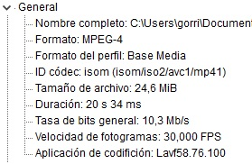
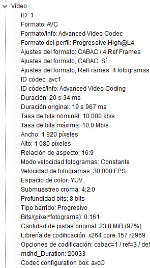
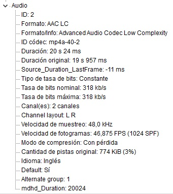
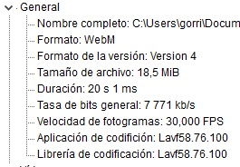
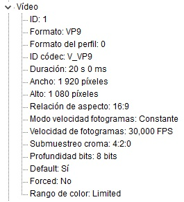
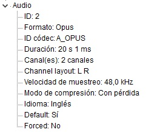

Ejercicio 1: Clip de vídeo incrustado en HTML 5
Tarea 1.1: Codificación de los vídeos
Vídeo original: Practica_H.265.mp4
Sus principales características son:
- Codec vídeo: HEVC/H.265
- Codec audio: AAC LC
- Formato: MPEG-4
- Resolución: 1920 x 1080
- FPS: 60 fps
- Tasa de bits: 19765 kbps
- Estructura GOP: N = 60, M = 60. Dicha estructura no se ve en la información ofrecida por Avidemux o MediaInfo, pero contando los fotogramas se ha observado que la estrucutra es fija, que hay un fotograma I cada 60 fotogramas y que el resto son fotogramas B, sin ninguna P.
- Tamaño: 47,9 MB
Codificación y resolución para la publicación del vídeo en Web
Partiendo de la información sobre los codes y su soporte por parte de los navegadores de esta tabla, las codificaciones elegidas inicialmente han sido AV1 y AVC/H.264. De todas formas, como Avidemux no permite la codificación en AV1 (Does Avidemux Add Support for AV1?), finalmente se han elegido VP9 (antecesor del AV1) y AVC/H.264.
Las principales razones para esta elección han sido:
- Entre las dos codificaciones se cubre el soporte en todos los navegadores principales, tal y como se puede observar en la tabla anteriormente mencionada.
- Ambas codificaciones están optimizadas y consigues compresiones y calidades muy buenas.
- VP9, al igual que AV1, es abierto y sin patentes, y forma parte del formato WebM.
- AVC/H.264 es el más extendido y aunque se un códec propietario, los navegadores puede reproducirlos sin costes adicionales.
La resolución seleccionada es 1080p (1920x1080). Se trata de una resolución que equilibra de manera adecuada la calidad, el consumo de ancho de banda y el consumo de datos, y es compatible con la mayoría de dispositivos.
Es habitual que los servicios de streaming ofrezcan resoluciones más pequeñas (720p, 480p, 360p, etc.) para adaptarse dinámicamente a distintos dispositivos y situaciones de peor conexión. De esta forma, se prioriza que el usuario obtenga el contenido, aunque sea con menor calidad, en lugar de interrumpir la reproducción. De todas formas, para la ejecución de esta práctica no se han tenido en cuenta.
Configuración en Avidemux para obtener los vídeos
A continuación, se detallan las principales configuraciones realizadas en Avidemux para obtener los dos formatos de vídeos mencionados.
AVC/H.264
- Salida de video: Mpeg4 AVC (x264).
- Salida de audio: El mismo que el original.
- Formato de salida: MP4 Muxer.
- Velocidad de frame: Filtro “Remuestrear los FPS” a 30 fps, reduce los fps a la mitad manteniendo la duración del vídeo.
- Resolución: No se modifica, la original es 1080p.
- Modo de codificación: Tasa de bits media (dos pasadas).
- Tasa de bits media: 10.000 kbps, más o menos la mitad de la original. Según algunas fuentes, suficiente para la resolución y fps definidos.
- Video generado: Practica_H.264.mp4
En estas imágenes de MediaInfo se puede observar que el resultado obtenido es el indicado. Aunque la estructura GOP no aparece reflejada, en Avidemux se ha comprobado que es variable a lo largo del vídeo, y se han incluido también fotogramas P.
  VP9
- Salida de video: VP9 (libvpx).
- Salida de audio: Opus Encoder, el encoding de audio soportado por WebM.
- Formato de salida: WebM Muxer.
- Velocidad de frame: Filtro “Remuestrear los FPS” a 30 fps, reduce los fps a la mitad manteniendo la duración del vídeo.
- Resolución: No se modifica, la original es 1080p.
- Modo de codificación: Tasa de bits media (dos pasadas).
- Tasa de bits media: Al principio se ha dejado en 0 kbps para que el software lo ajuste a la calidad óptima, pero se ha obtenido un fichero de casi 41MB con 16.661 kbps. Como 10.000 kbps es suficiente, se ha vuelto a generar con esta tasa de bits, obteniendo un vídeo de 18,5MB.
- Video generado: Practica_VP9.webm
En estas imágenes de MediaInfo se puede observar que el resultado obtenido es el indicado. Aunque la estructura GOP no aparece reflejada, en Avidemux se ha comprobado que es variable a lo largo del vídeo, y se han incluido también fotogramas P.
  Tarea 1.2: HTML5 vídeo
En el reproductor de debajo, mediante el tag "<video>" y varios "<source>", se han configurado ambos formatos, WebM y MP4. En función del dispositivo y navegador en el que se abra la web, se seleccionará y reproducirá el primero que sea compatible.
A continuación, se enumeran algunas de las características del vídeo de HTML5:
- Sencillez: El tag "<video>" permite incrustar un reproductor de vídeo de manera muy sencilla y con poco esfuerzo.
- Adaptabilidad y personalización: Mediante los múltiples opciones y atributos que ofrece es posible mostrar los controles del reproductor (play, pause, volumen, etc.), incluir una imagen como poster (poster) o controlar su comportamiento (autoplay, muted). Además, mediante el uso de CSS, se puede personalizar su estilo.
- Diferentes fuentes: Se pueden definir varios vídeos mediante tags "<source>" y en función del dispositivo y navegador en el que se abra la web, se seleccionará y reproducirá el primero que sea compatible.
- Pistas de texto cronometratas: Utilizando tags "<track>" se pueden definir pistas de texto cronométradas de distinto tipo de manera sencilla (subtítulos, captions, descripciones, titulos de capítulos, etc.)
Tarea 1.3: Publicación del vídeo mediante CDN
Como esta web con las soluciones de la práctica está publicada en el CDN de Amazon AWS Amplify, en el reproductor de la tarea 1.2 se puede ver el vídeo publicado.
La reproducción del vídeo, tanto en desktop con coenxión directa con cable, como en móvil con Wifi o 4G, es instantanea y sin interrupciones. Se ha observado que la descarga del vídeo en móvil ha necesitado más tiempo, pero como se realiza en pequeñas partes y se guardan en el buffer, la demora en el inicio es despreciable y su reproducción no se interrumpe.
La reproducción en móvil del vídeo original HEVC/H.265 de la tarea 1.1, en cambio, sí que se interrumpe, ya que es más pesada y necesita descargar más datos.
Por lo tanto, considerando que la reducción de la calidad es prácticamente indetectable, y que la reproducción se realiza de manera fluida, se puede concluir que la elección de los codecs y formatos es válida.
Tarea 1.4: Funcionalidades de HTML5 vídeo
TODO!!!!! Comprobar sutítulos tras publicar la web
En el vídeo de arriba se pueden observar algunas funcionalidades que ofrece el vídeo de HTML:
- Poster: Se ha añadido una imagen como poster con la propiedad "poster". Con la reproducción automática es posible que no se vea, pero tambiéns está configurado en el resto de reproductores del ejercicio.
- Controles: Con el atributo booleano "controls" se muestran los controles (play/pause, volumen, pantalla completa, etc.).
- Subtítulos: Se han añadido subtítulos con el tag "<track>".
- Sin sonido: Con la propiedad "muted" se ha configurado la reproducción sin volumen.
- Reproducción automática: Con la propiedad "autoplay" se ha activado la reproducción automática. Esta funcionalidad se activa siempre y cuando se use junto con la propiedad "muted".
- Carga diferida: Aunque no es exclusiva del vídeo (ya que se puede configurar también para imágenes, iframes, etc.), se ha activado la carga diferida con la propiedad "load=lazy". De esta forma, la carga del vídeo se retrasa hasta que el elemento "<video>" entra en el área visible del navegador, por lo que el vídeo no comienza a reproducirse hasta que el usuario baje hasta él. Es una técnica utilizada para evitar descargar datos innecesarios.
- Texto a mostrar cuando no es posible cargar el vídeo: se ha configurado el texto "El navegador no soporta los formatos de vídeo configurados." para los casos en los que no es posible reproducir el vídeo.